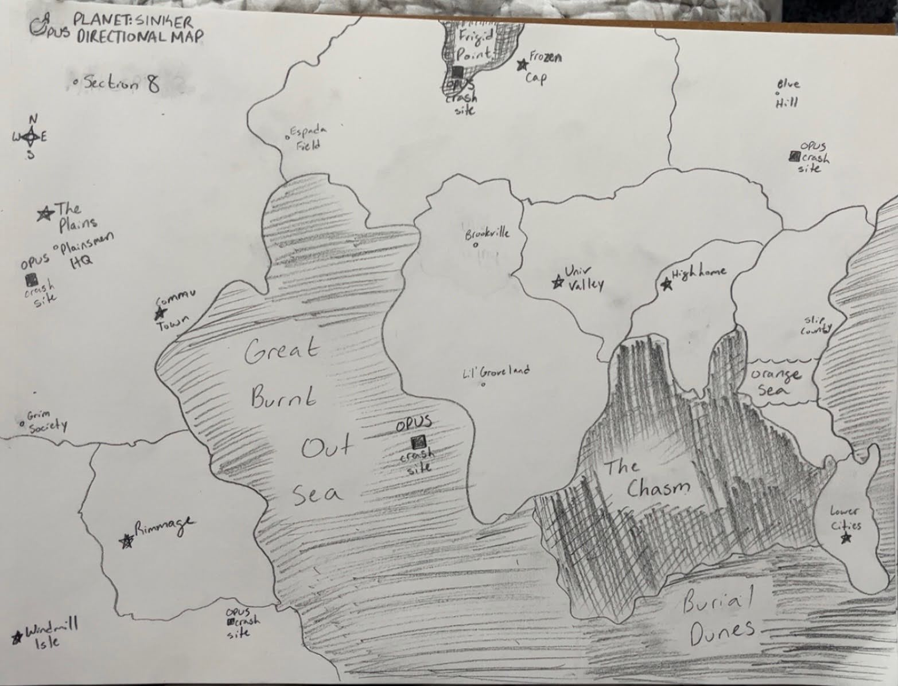

Welcome to Planet Sinker
Prologue
Humanity began expansion in 2027 to the outer reaches of space through the OPUS, Outer Planetary Universal Stargazing, project after the dimming of the Sun in 2026 led to a major push for the rushed advancement of human technology. The project consisted of a fleet of ships with the intent of delivering cryogenically frozen, sleeping human populations to planets capable of supporting life. The fleets were launched to major success, escaping the Solar System with ease. Although the project would not be without its failures.
In year 83 of its planned 150 year journey, one ship within the fleet saw insubordination amongst its crew. A virus was uploaded to alter the trajectory of the fleet in an attempt to wipe the sinful human race off the face of the universe. Luck would have it the damage was mitigated by the work of another crew member who sadly lost their life protecting the rest of the population. The fleet would crash land on the planet Sinker, and the sleeping crew and inhabitants who survived awoke not to the land initially promised, but instead a desolate sand wasteland covered in massive insects, and creatures that resemble the sea creatures of Earth.
Nonetheless, hope for the survival of the human race still remained. So once again human expansion began across the new frontier in the year 2110.
The date is now March 27, 2260, a century and a half after the Heavenly Shower, as some call it. Cities have popped up, using scavenged parts of the wrecked OPUS ships. In one such city, Univ Valley, lies the Shack-a-loon where our story takes place…
Planet Sinker
Planet Sinker is a sand-covered planet with four Pluto-sized moons. Being a dry and sandy wasteland, the planet is ill-fit to sustain human life. To survive, humans have used B.G.s or Biological Generators found in the remains of crashed ships to process food and water from the finite sources they can find. Around these devices cities would be built, creating the cultural and political safe havens of the planet. These devices are remnants of technology used to sustain the space farers of the OPUS project, but were not expected to be used much longer past the initial journey of 150 years. Thus, conflicts break out when Biological Generators run into their Last Call when they show signs of irreparable fatigue.
During the Last Call they are run at their max output and are no longer usable after the 24 hour Last Call procedure. There were originally 50 Biological Generators, but a majority have either been stolen, held for ransom or have begun to show massive fatigue.
Fauna
The fauna consists of a group of sentient hive-minded insects called Buzzers, Humans have learned to utilize a select few species for daily tasks such as the large horse-sized lizard creatures called Hemas. They are used for long-distance travel and steered by their protruding spinal bone. For farming and heaving large objects humans have begun to use spiked, hard-shelled species resembling sea creatures found on earth such as Mollescks resembling nautiluses, and Enkai, resembling octopi. They have grown thick legs unakin to their Earth counterparts. These large trunks of legs make them great for heavy lifting and if the shell is cut through just right, their meat makes for a nutrient-rich meal. Before humanity landed upon this planet, the Buzzers were the original inhabiting species. Their high intelligence and hive-mind connection allowed them to connect with humans, at first hoping to live harmoniously with them. However, as time moves on and conflicts arise between the humans, they have become more inclined to an observational role keeping their distance.
Flora
The flora of Planet Sinker is very limited due to the scarce water and dry worldwide climate. In the north lies the Frigid Point, home to frozen glaciers and mountains, suggesting extreme climate change occurred at one point transforming the formerly wet planet as it lost its atmosphere and surface water. The rest of the planet is arid and suffers from extreme temperature swings. During the day the sand absorbs heat, and at night it escapes into space resulting in extreme cold even if day temperature is mild.
Univ Valley lies in a region with massive sand storms with incredibly rare rains. Most water is trapped underground. Many cacti, and succulent litter the landscape thanks to their water storage capacity. Some drought tolerant trees can be found in oases like Lil’ Groveland surrounding the fertile springs, wells, and aquifers.
Astronomy
The planet is encircled by 4 pluto-sized moons causing extreme sand storms, sporadic flooding, violent tectonic changes, deep fissures stretching from The Chasm, massive sand dunes such as the Big Burn Out Sea, and the Burial Dunes.
Map
